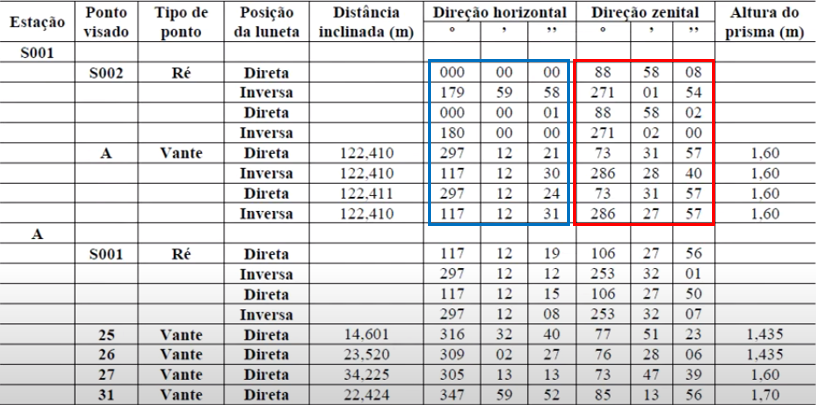
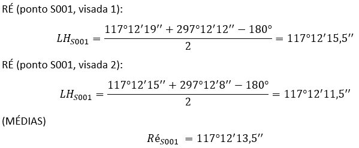
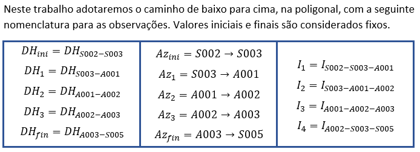
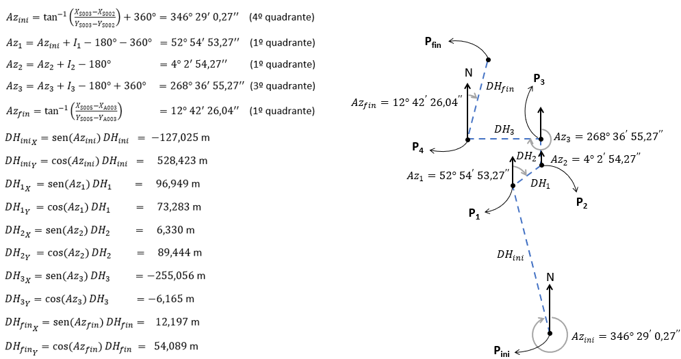
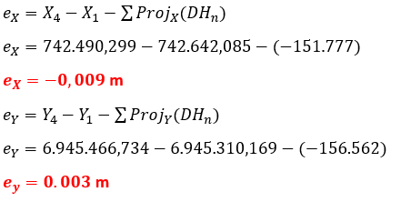
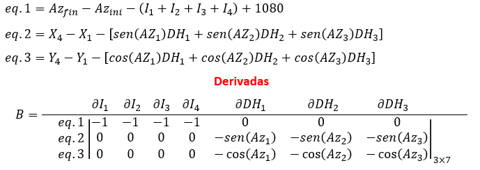

Ajustamento de Observações I - Prof. Ivandro Klein
Site elaborado pelo discente Rubens A. L. Benevides com o objetivo de divulgar a
resolução dos trabalhos passados na disciplina Ajustamento de Obervações I
(nível doutorado) do programa de Pós-Graduação em Ciências Geodésicas (PPGCG) da
Universidade do Paraná (UFPR)
Trabalho 1 - Propagação de erros e/ou covariâncias
Objetivos:
- Calcular as coordenadas planimétricas no sistema UTM (norte - N e este - E), a ltura
elipsoidal (h) e os respectivos desvios-padrões para cada um dos vértices:
25, 26, 27, 31 e 32, sendo estes vértices as divisas de um imóvel.
- Verificar se a precisao planimetrica resultante (precisão 2D horizontal) é melhor
ou igual a +- 8 cm em cada vértice de divisa.
- O ultimo vértice de divisa (32) deve ser determinado pela intersecção dos
alinhamentos 25-27 e 25-31.
- Calcular o perímetro e a área do imovel, bem como os respectivos desvios-padrões.
- Por fim, verificar se o desvio-padrão da área é inferior ou igual a 5 % do seu valor.
Primeiro faremos o cálculo das coordenadas dos pontos da poligonal
- Calcular azimute e comprimento do alinhamento inicial S001-S002:
- Calcular o ângulo horizontal externo S002-S001-A. Segundo os dados da caderneta de campo,
tem-se 8 visadas, 4 diretas e 4 inversas. Calcular o angulo horizontal consiste em tirar
a média de tudo dentro do retângulo azul, desde que, claro, sejam feitas as devidas
transformações da luneta para a posição direta. O mesmo vale para o ângulo zenital/vertical,
no retângulo vermelho.

- Fazer o mesmo para o ângulo zenital:
- Calcular distância e azimute de S001 para A. Depois utiliza-los para calcular as coordenadas
do ponto A:
MUDANÇA DE ESTAÇÃO: S001 -> A
- Calcular angulos das irradiações e distâncias. Calcular azimutes e utiliza-los para
calcular as coordenadas dos pontos 25, 26, 27 e 31. Ou seja, fazer tudo de novo com a
nova ré :(

ERROS
Ok, agora vem a parte complicada de propagação
dos erros, mas, conhecendo a ordem das fórmulas, não é tão complicado. Primeiro, vamos listar
os parâmetros que conhecemos. Alguns valores intermediários ainda terão que ser calculados.
No final, desaja-se as precisões das coordenadas dos pontos 25, 26, 27 e 31.
Armado com estes 16 parâmetros
seguiremos para o labirinto de fórmulas que nos dará a precisão do ponto A:
Substituindo tudo encontra-se a precisão do
ponto A:
Repita para os pontos 25, 26, 27 e 31.
Mesmo automatizando tudo com
o uso de funções no python, doze, dos 16 parâmetros anteriores, mudarão com a mudança da estação
de S001 para A. Considerando as dist. inclinadas, horizontais e as coordenadas dos pontos,
o total de parâmetros necessários para calcular a pricisão dos pontos sobe para 19. Uma única
função foi escrita para receber estes 19 parâmetros e calcular as precisões dos pontos seguintes
(irradiações), ela se encontra neste scrip
salvo no Google Colab. O scritp está dividido em 3 células de um Jupyter notebook, prontas para serem
executadas e reproduzir todos os resultados deste trabalho. Mais detalhes no código.
Parâmetros redefinidos e recalculados com estação em A:
De acordo com a precisão planimétrica exigida,
apenas o vértice 32, determinado por intersecção de alinhamentos, excedeu o limite de 8 cm.
Os vértices 25, 26, 27 e 31 atendem à precisão planimétrica exigida. A precisão planimética
dos vértices que atendem ao exigido é 5 vezes menor 8 cm, o que é um bom sinal, pois dá uma
margem grande para equipamentos topográficos menos precisos. Nem sempre estarão disponíveis
estações totais de alta precisão, como a Ruide-RTS-822R3, que segundo a
NBR 13133, é um
equipamento de alta precisão.
Cálculo da área do imóvel e sua precisão
A razão precisão/área nos mostra que o erro é inferior
a 5 % do valor de área, como exigido no início do trabalho. No caso, o valor de 0,2 %, é 25 vezes
menor que o limiar establecido. Quetiona-se se este valor é adequado, pois embora o erro na área
realmente cresça com a área do imóvel, acredita-se que uma medida que variasse em função da área e da
quantidade de pontos seria mais adequada. Justifica-se esse argumento com o seguinte exemplo: podem
haver imóveis com área grande, mas de geometria simples, sem ultrapassar uma dezena de vértices.
Por outro lado, podem existir imóveis complexos, com dezenas de vértices, mas com pouca área.
No primeiro caso, o imóvel grande pode passar no teste com facilidade, mas o imóvel pequeno teria
dificuldades em razão da quantidade de pontos. Há evidências de que isto é verdade pois,
nesta aula,
é explicado que quanto mais vértices em uma poligonal, pior a qualidade dos vértices se torna.
Portanto, sugere-se uma fórmula que tenha tolerância propocional não somente à área do imóvel, mas que
também considere o nº de vértices do levantamento, algo como: raiz(nº_de_vértices)*(sigma_A/A).
Por fim, calculamos o perímetro do imóvel e sua precisão
PS: todos os calculos foram feitos com precisao de float 64 bits (15 casas decimais),
mas foram arredondados para o milímetro nas fórmulas para não poluir o site visualmente.
Valores com mais casas decimais podem ser obtidos no script citado
Trabalho 2 - Ajustamento das observações de uma poligonal enquadrada
Objetivo
- Obter as coordenadas ajustadas e as respectivas precisões dos vértices A001 e A002 da poligonal
com os dados fornecidos. O ajustamento deve ser realizado por meio de um dos modelos vistos:
paramétrico com injunção absoluta, paramétrico com solução alternativa por meio de
interpretação geométrica, correlatos ou combinado. Comparar os resultados com os resultados
obtidos pelo modelo paramétrico com injunção relativa.

-
Escolhi o modelo de ajustamento por equações de condição (constraint equations),
ou modelo dos correlatos. Uma explicação deste modelo, específica para este problema, pode
ser consultada neste artigo.
Solução
- Definir equações de condição das observações:
- Calcular azimutes e projeções em XY:

- Verificar o erro de fechamento angular:
- Verificar o erro das projeções em X e Y:

- Vetor das observações inicias:
- Equações de condição e matriz de derivadas parciais (Jacobiana):
